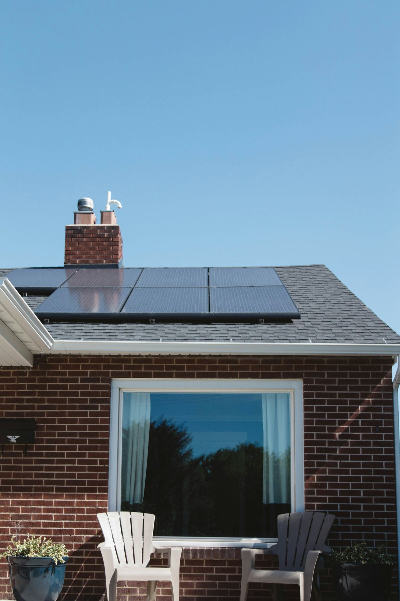

No partimos de una cantidad de paneles. Partimos de cómo usás la energía.
Un sistema bien dimensionado tiene que responder a la demanda, a la disponibilidad de red, al espacio, a la criticidad de las cargas y al horizonte de inversión.
On-grid
Autogeneración conectada a red para operaciones con consumo compatible y búsqueda de eficiencia económica.
Off-grid
Autonomía energética para ubicaciones sin red o con necesidades específicas de continuidad.
Híbridos
Combinación de red, generación y almacenamiento cuando el contexto operativo lo justifica.

Dimensionar es decidir qué conviene priorizar.
No toda oportunidad energética debe maximizar generación. A veces importa más el autoconsumo, la continuidad, la expansión futura o mantener un CAPEX razonable.
Perfil de consumo
Cuándo y cómo se consume define cuánto valor puede capturar la generación propia.
Infraestructura
Tableros, potencia, superficie, orientación y condiciones del sitio forman parte del problema.
Escenario económico
Trabajamos con supuestos explícitos y evitamos presentar retornos garantizados sin ingeniería.
De la idea a un sistema que pueda operar de verdad.
La solución se construye por etapas, reduciendo incertidumbre antes de comprometer inversión.
Prefactibilidad
Relevamiento inicial, lectura de consumo y definición de escenarios posibles.
Ingeniería
Dimensionamiento, arquitectura, equipamiento y criterios de instalación.
Ejecución y seguimiento
Puesta en marcha, validación operativa y continuidad del acompañamiento.
¿Tiene sentido solar para tu operación?
La respuesta depende más de tu perfil de consumo y contexto que de una promesa genérica de ahorro.
Revisemos el escenario.
Una primera conversación permite determinar si vale la pena profundizar el análisis.
Agendar diagnóstico